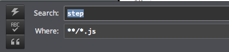
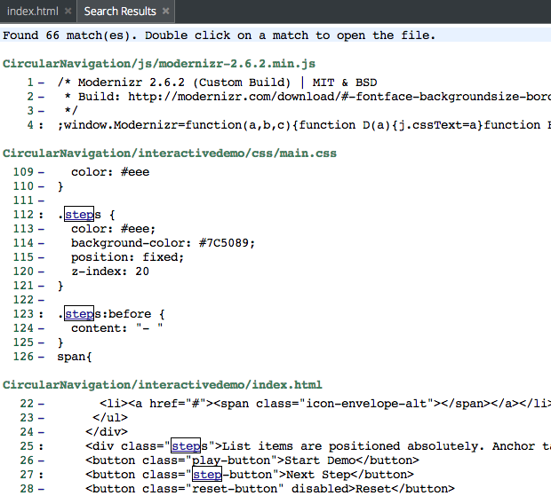

Search and Replace¶
Codio supports local and global search and replace. You can access these feature using a shortcut or from the Find menu. The shortcuts for each action are displayed in the Find menu. You can override these shortcuts in User Preferences.
Local search and replace¶
Search and replace is supported on the currently selected file. The default shortcuts are defined in the following section of User Preferences:
;Find.
; Type: hotkey
key_find = Cmd+F
;Find next.
; Type: hotkey
key_find_next = Cmd+G
;Find previous.
; Type: hotkey
key_find_prev = Shift+Cmd+G
;Replace.
; Type: hotkey
key_replace = Cmd+Alt+F
;Replace all.
; Type: hotkey
key_replace_all = Shift+Cmd+Alt+F
Global search and replace¶
Global search and replace are available from the Find > Find in project and Find > Replace in project menu options.
You can search regular expressions, ignore case, and whole word settings using the control button in the search dialog.

Once the search operation has completed, all matches are shown in the Codio tab. Double-click the highlighted match to open the file in a new tab.

Pattern and wildcard matching (Globs)¶
When doing a search, you can specify a search pattern in the Where field. As an example, for the following project:
|-- lib
| |-- index.js
| |-- hello_world.js
|-- index.html
|-- 404.html
|-- app.js
`-- gruntfile.coffee
Use globs to search for files as follows:
All files ending in
.js:**/*.js. -index.js-hello_world.js-app.jsAll files ending in
.htmlin the root (/home/codio/workspace or ~/workspace) folder:*.html-index.html-404.htmlAll files in
lib:lib/*.*-index.js-hello_world.jsAll files ending in
.htmlor.coffee:**/*{.html,.coffee}-index.html-404.html-gruntfile.coffeeAll files beginning with
index:**/index*-index.js-index.html
Any character that appears in a pattern, other than the special pattern characters described below, matches itself.
The NULL character may not occur in a pattern.
A backslash escapes the following character; the escaping backslash is discarded when matching.
The special pattern characters must be quoted if they are to be matched literally.
The special pattern characters have the following meanings:
*Matches any string, including the null string. When the globstar shell option is enabled, and*is used in a filename expansion context, two adjacent*s used as a single pattern will match all files and zero or more directories and subdirectories.If followed by a
/, two adjacent*s will match only directories and subdirectories.?Matches any single character.[…]Matches any one of the enclosed characters. A pair of characters separated by a hyphen denotes a range expression; any character that sorts between those two characters, inclusive, using the current locale’s collating sequence and character set, is matched.If the first character following the
[is a!or a^then any character not enclosed is matched.A
-may be matched by including it as the first or last character in the set. A]may be matched by including it as the first character in the set.A character class matches any character belonging to that class. The word character class matches letters, digits, and the character
_.Within
[and], an equivalence class can be specified using the syntax[=c=], which matches all characters with the same collation weight (as defined by the current locale) as the character c.Within
[and], the syntax [.symbol.] matches the collating symbol symbol.?(pattern-list)Matches zero or one occurrence of the given patterns.*(pattern-list)Matches zero or more occurrences of the given patterns.+(pattern-list)Matches one or more occurrences of the given patterns.@(pattern-list)Matches one of the given patterns.!(pattern-list)Matches anything except one of the given patterns.